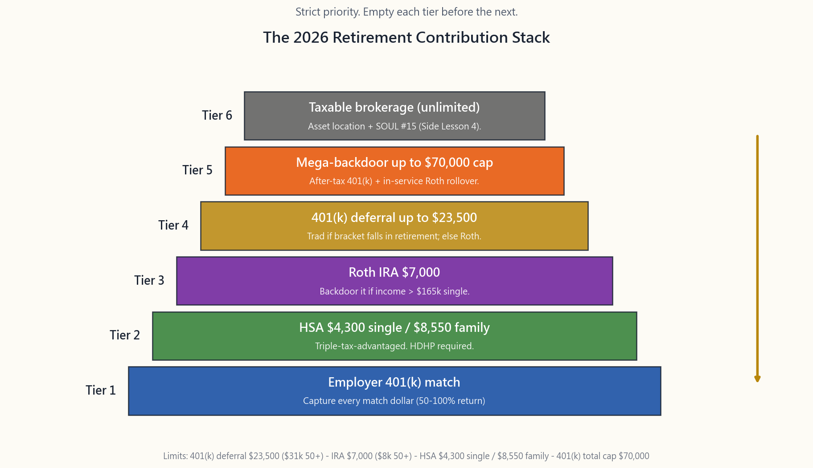
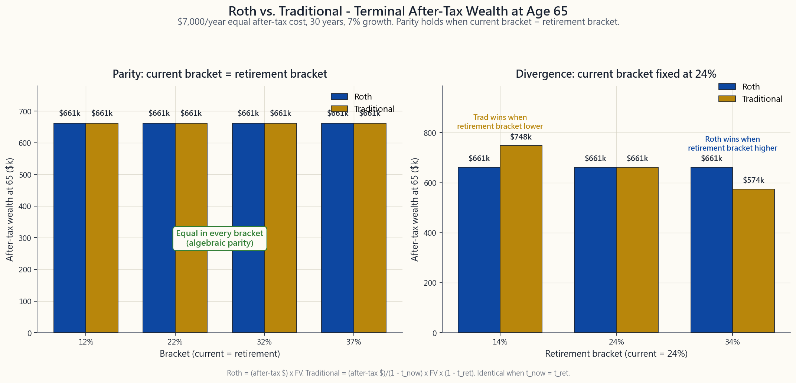

Side Lesson 11: Retirement Accounts — 401(k), IRA, Roth, HSA, and the Optimal Contribution Stack
1. Why This Is Important
The US tax code hands every working household a stack of tax-advantaged wrappers — a 401(k), an IRA in two flavours, a Roth, an HSA, and (for some plans) a mega-backdoor channel — and the dollar limits go up nearly every year. In 2026 the headline numbers are: $23,500 in a 401(k) ($31,000 if you're 50+), $7,000 in an IRA ($8,000 if 50+), $4,300 in an HSA single ($8,550 family), and a total 401(k) cap of $70,000 when you stack employee deferral, employer match, and after-tax mega-backdoor contributions. Used in the right order, these wrappers shelter roughly six figures per year of pre-tax income for a high-earner household.
Four reasons this lesson matters more than any equivalent hour of fund selection:
match of 50¢ on the dollar up to 6% of salary is a 50% instant return on the marginal dollar. No equity strategy on Earth pays that. Skipping the match is the single most expensive mistake in retail finance, and roughly one in five eligible workers does it anyway.
going in, growth tax-free, withdrawals tax-free for qualifying medical expenses. Save the receipts and reimburse yourself decades later and the HSA functions as a stealth Roth IRA with a deduction on top.
wrong and the cost is 10-20% of your terminal wealth. The decision reduces to one comparison: **your current bracket vs. your expected retirement bracket.** Get that comparison right and the rest is bookkeeping.
contributing the same total dollars get different terminal wealth if they fund the wrappers in a different order. The interactive on the website ranks the stack and tells you the marginal dollar's home.
Horace's deeper view — "tax via options and margin" — sits beneath this entire lesson: every dollar that lands inside the right wrapper is a dollar the IRS cannot tax, ever, at the right endpoint. The stack is the cheapest alpha you will ever find — written into the code, public, mechanical.

2. What You Need to Know
2.1 The 2026 Contribution Limits — One Page
Every wrapper has a separate annual limit. Filling all of them is not double-counting; it is the optimal stack.
| Wrapper | 2026 limit | 50+ catch-up | Income limit? |
|---|---|---|---|
| 401(k) employee deferral | $23,500 | +$7,500 = $31,000 | none |
| 401(k) total (incl. match + after-tax) | $70,000 | +$7,500 = $77,500 | none |
| IRA (Traditional or Roth) | $7,000 | +$1,000 = $8,000 | Roth phases out $165-180k single / $246-256k MFJ |
| HSA, single coverage | $4,300 | +$1,000 at 55+ | HDHP required |
| HSA, family coverage | $8,550 | +$1,000 at 55+ | HDHP required |
| 457(b) (govt / non-profit) | $23,500 | +$7,500 | sometimes stackable with 401(k) |
Two operational notes. First, the catch-up (age 50+) is allowed only if your plan permits it; almost all do for the 401(k), the IRA catch-up is statutory. Second, the HSA requires you to be enrolled in a High-Deductible Health Plan (HDHP). If your employer offers a PPO and an HDHP, the HDHP usually pairs with an HSA — and most years, for healthy savers under 50, the HDHP plus maxed HSA is the mathematically dominant choice.
The total 401(k) cap of $70,000 — sometimes called the §415 limit — is the most under-used dollar in the code. It includes your $23,500 employee deferral, your employer match, and any after-tax non-Roth contributions your plan permits. The space between (deferral + match) and $70,000 is the mega-backdoor Roth lane: contribute after-tax dollars into the gap, immediately convert to Roth via in-service rollover, and another $30,000-$45,000 per year flows into the tax-free wrapper that is otherwise capped at $7,000.
2.2 Traditional vs. Roth — The Single Decision That Matters
Every wrapper in the stack is one of two flavours.
Traditional (tax-deferred). Pre-tax going in (deduction today), tax-deferred growth, taxed as ordinary income on withdrawal. Think: "tax break now, pay later."
Roth (tax-free at the back end). Post-tax going in (no deduction today), tax-free growth, tax-free withdrawals after 59½ and a five-year holding window. Think: "pay now, never again."
The fundamental decision is bracket arbitrage. Hold today's $1 of contribution constant; the after-tax wealth at retirement is:
$$ W_{\text{Roth}} = (1 - t_{\text{now}}) \cdot (1 + r)^{N} $$
$$ W_{\text{Trad}} = (1 + r)^{N} \cdot (1 - t_{\text{ret}}) $$
The two are **algebraically identical when $t_{\text{now}} = t_{\text{ret}}$**. Roth wins when your retirement bracket is higher; Traditional wins when your retirement bracket is lower. The image below makes the parity visible.

Three working rules.
- High earner, expecting to spend down hard in retirement → Trad.
- Young, modest income, expecting to be richer later → Roth. A
- Don't know? Split. A 50/50 Roth/Traditional 401(k) hedges the
The often-overlooked bonus for Roth: **no Required Minimum Distributions during the original owner's lifetime**. A 75-year-old with $2M in Traditional IRAs is forced to withdraw roughly $80,000 each year (taxed at ordinary rates), regardless of need. The same $2M in a Roth IRA can sit untouched, compounding tax-free, and pass to heirs. For high-net-worth households, the no-RMD feature alone tilts the math toward Roth even at parity brackets.
2.3 The Optimal Contribution Stack — Six Tiers
The image at the top of this lesson is the cheat sheet. The logic under each tier is what makes it stick.
Tier 1 — Capture the employer 401(k) match in full. The most expensive mistake in retail finance is leaving match dollars on the table. A typical formula is "50% match on the first 6% of salary" (a 3% gift if you contribute 6%) or "100% match on the first 4%." Whatever your formula, the marginal return on the dollar that captures the last bit of match is 50-100% guaranteed. No investment beats that. Even if you have credit-card debt, even if your plan's fund menu is mediocre, capture the match first.
Tier 2 — Max the HSA if you have an HDHP. Triple-tax-advantaged. $4,300 single / $8,550 family in 2026. Pay for current medical out of cash flow when possible, save the receipts, and let the HSA compound. After 65 the HSA can be withdrawn for any purpose at ordinary rate (like a Traditional IRA), with the medical-tax-free option preserved indefinitely. There is no other wrapper in the code with this profile.
Tier 3 — Max the Roth IRA (or backdoor it). $7,000 a year. If your income is above the phaseout ($165,000-$180,000 single in 2026), the backdoor Roth route still works: contribute non-deductible to a Traditional IRA, immediately convert to Roth, pay zero tax on the (zero) gain. The catch is the pro-rata rule — if you have existing pre-tax balances in any Traditional IRA, the IRS treats every conversion as a proportional mix of pre-tax and after-tax across all your IRAs. The fix is to roll any pre-tax IRA balances into your current 401(k) first, leaving the Traditional IRA empty for the backdoor operation.
Tier 4 — Max the 401(k) employee deferral up to $23,500. Whether you contribute to the Traditional or Roth bucket within the 401(k) follows §2.2's bracket logic. The employer match always lands in the Traditional bucket regardless of your election.
Tier 5 — Mega-backdoor Roth, if your plan permits. Verify two plan features: (a) after-tax (non-Roth) employee contributions are allowed above the $23,500 deferral, and (b) **in-service Roth rollover** is allowed (sometimes called "in-plan Roth conversion"). If both are present, contribute up to (Total Cap − Deferral − Match) in after-tax dollars and immediately convert. Math example: $70,000 total cap − $23,500 deferral − $11,500 match = **$35,000 mega-backdoor lane**. That is $35,000 a year flowing into a Roth wrapper that the IRA's $7,000 limit would otherwise cap.
Tier 6 — Taxable brokerage. The wrappers are full. Now asset-location and tax via options become the levers. Side Lesson 4 covers this layer.
The stack is strict priority: empty Tier 1 before opening Tier 2, empty Tier 2 before Tier 3, etc. The interactive on the website allocates a user-supplied annual cash-flow figure across all six tiers in this order and reports the projected after-tax wealth at 65.
2.4 The Backdoor and Mega-Backdoor in Detail
Backdoor Roth IRA (high-income earners). Required when your income exceeds the Roth IRA direct-contribution phaseout.
Traditional IRA. There is no income limit on non-deductible Traditional contributions.
the contribution and before any gains accrue.
non-deductible basis.
The conversion is taxable on any pre-tax basis or accrued earnings; zero in the clean case. The pro-rata rule (§2.3) makes this messy if you have other pre-tax IRA balances — clean those out first by rolling into a 401(k) that accepts incoming rollovers.
Mega-backdoor Roth (plan-dependent). A separate operation that uses the §415 total cap.
contributions and in-service rollovers (look at the SPD or call HR).
contribute additional after-tax dollars up to the gap between (deferral + match) and $70,000.
after-tax contribution flips to Roth on the next pay cycle. If automatic isn't available, do quarterly manual conversions to minimise pre-conversion gains.
A plan that allows the mega-backdoor has effectively raised your annual Roth contribution ceiling from $7,000 to $30,000-$45,000. For high earners, this is the largest single-wrapper opportunity in the code.
2.5 The 5-Year Rules (Plural) and Roth Conversion Ladders
There are two distinct five-year rules for Roth IRAs, and they trip up almost everyone.
Rule A — the five-year holding period for earnings. Before age 59½, your Roth contributions can be withdrawn anytime tax- and penalty-free. The earnings on those contributions are a different story: to withdraw earnings tax-free, the Roth IRA must be at least five years old (measured from the first Roth contribution to any Roth IRA you own — once the clock starts, it never resets). Otherwise earnings withdrawals before 59½ are taxable plus 10% penalty.
Rule B — the five-year holding period for converted amounts. Each Roth conversion starts its own five-year clock. Withdrawing a converted amount before five years have passed (and before 59½) triggers the 10% early-withdrawal penalty on the conversion principal.
Roth conversion ladder. A retirement-distribution strategy that exploits Rule B. Steps:
~$50,000 from your Traditional IRA, paying ordinary income tax on each conversion (in the low income-window of early retirement).
at 50 is withdrawable penalty-free at 55. A conversion done at 51 is withdrawable at 56. And so on.
tax- and penalty-free. (You already paid tax at conversion; it's Roth dollars now.)
accessible tax- and penalty-free regardless of conversion date.
This is the standard FIRE-movement bridge between early retirement (50-59) and traditional retirement-account access (59½+). The 5-year ladder transforms a "locked until 59½" Traditional IRA into spendable cash starting at 55.
2.6 Required Minimum Distributions (RMDs) — The Back-End Tax
For Traditional 401(k)s and Traditional IRAs, the IRS eventually collects. SECURE Act 2.0 (passed 2022) raised the RMD age:
- Born 1951-1959: RMDs begin at age 73.
- Born 1960 or later: RMDs begin at age 75.
Roth IRAs have no RMDs during the owner's lifetime. Roth 401(k)s also no longer have RMDs as of 2024 (a SECURE 2.0 change). Inherited Roth IRAs do have a 10-year payout rule for non-spouse beneficiaries, but the distributions are still tax-free.
Penalty for missing an RMD. SECURE 2.0 lowered the penalty from 50% (savage) to 25% (still savage), reducible to 10% if corrected within two years. Set a calendar reminder on December 1st of every RMD year.
3. Common Misconceptions
**Misconception 1: "The 401(k) and IRA limits are combined; I can only contribute one or the other."**
False. They are separate limits. A 50-year-old in 2026 can contribute $31,000 to a 401(k) and $8,000 to an IRA in the same year, totalling $39,000 across the two wrappers — plus HSA, plus mega-backdoor.
**Misconception 2: "Roth always wins because tax-free growth is better than tax-deferred."**
It is the same number when current bracket = retirement bracket. The algebra in §2.2 is exact. Roth wins only when retirement bracket is higher than current bracket.
Misconception 3: "I make too much for a Roth IRA."
The income phaseout blocks direct Roth contributions. The backdoor Roth (§2.4) is fully legal and has been blessed by Congress (the 2018 TCJA technical-corrections language explicitly acknowledged it). Most high earners are using it.
**Misconception 4: "The 401(k) match goes into my Roth bucket if I elect Roth."**
No. The employer match always lands in the Traditional (pre-tax) bucket regardless of your contribution election. You will pay ordinary tax on the match dollars at withdrawal.
**Misconception 5: "I should max my 401(k) before capturing the match — I'll get to the match anyway."**
No. The match is per-paycheck in most plans, with no annual true-up. If you front-load contributions and hit the $23,500 cap by July, you forfeit the match for the rest of the year. Spread contributions across the full 12 paychecks to capture every match dollar.
**Misconception 6: "The HSA is just for medical expenses; I should use it as a checking account for prescriptions."**
The HSA is an investment account with optional medical-expense withdrawal. Pay current medical out of pocket if your cash flow allows, save the receipts, let the HSA compound for 30 years, and reimburse yourself the receipt amount at any time tax-free. The optimal use of the HSA is to not spend it.
Misconception 7: "Mega-backdoor is only for tech bros at FAANGs."
It depends on whether your plan supports after-tax contributions and in-service rollovers. Many plans do (read the SPD or call HR), and the share is rising as more plans adopt the feature. Public-sector and small-business plans tend to lack it; mid-large corporate plans often have it.
Misconception 8: "I'll convert everything to Roth in retirement."
Each conversion is taxable as ordinary income in the year of conversion. Converting $500,000 of Traditional IRA in a single year will push almost all of it into the 32-37% bracket, plus IRMAA Medicare surcharges, plus possibly state tax. The mechanical rule is convert only enough to fill the next bracket edge each year — spread over a decade if needed.
Misconception 9: "If I leave my employer I lose the 401(k) money."
Your own contributions are 100% vested (yours forever). The employer match may be on a vesting schedule (typically 3-6 years graded or cliff). On separation you can leave the 401(k) where it is, roll it to your new 401(k), or roll it to an IRA. Don't cash it out — that triggers ordinary tax + 10% penalty + the loss of decades of compounding.
**Misconception 10: "Roth conversions in retirement are pointless; I'll never spend the converted amount."**
The point is to **drain the Traditional balance into the Roth wrapper before RMDs hit at 75**. Each conversion in your low-bracket years 60-74 reduces the future RMD denominator. A $100,000 conversion at 65 in the 22% bracket costs $22,000 in tax and removes ~$4,100/year of mandatory ordinary-rate withdrawals starting at 75.
4. Q&A
**Q1: My 401(k) has a $23,500 employee limit and a $70,000 total cap. What happens between those numbers?**
That gap is the after-tax non-Roth contribution lane. If your plan permits it, you can contribute additional after-tax dollars up to the total cap, then immediately convert each contribution to Roth via in-service rollover (the mega-backdoor). If the plan doesn't permit it, the gap is filled only by employer contributions.
Q2: I'm 28 and in the 22% bracket. Roth or Traditional 401(k)?
Almost certainly Roth. At 28 your wage trajectory probably points up, and 22% is near the bottom of the schedule. Lock in tax-free growth now while the rate is cheap. Reconsider when your bracket crosses 32%.
**Q3: I'm 52, in the 32% bracket, with $1.5M in a Traditional 401(k) and $250k in cash. Anything I should be doing?**
Three things. (a) Continue maxing the 401(k) at 32% — Trad probably right given your bracket. (b) Add $8,000/year to a backdoor Roth IRA. (c) Investigate whether your plan permits the mega-backdoor — $35,000+ a year of after-tax-to-Roth at your stage materially changes the retirement tax picture.
**Q4: I have an old 401(k) from a previous employer and a Traditional IRA. How do I do a clean backdoor Roth?**
Roll the Traditional IRA (and any pre-tax balances) into your current 401(k) first. Most plans accept incoming rollovers from both other 401(k)s and IRAs. Once your Traditional IRA balance is zero, the backdoor (non-deductible Traditional contribution + immediate conversion) is clean: pro-rata applies to a $7,000 base of $7,000 = 0% taxable.
Q5: My wife stays home with the kids; can she contribute to an IRA?
Yes. The Spousal IRA rule lets a non-working spouse contribute up to the IRA limit ($7,000, or $8,000 if 50+) using the working spouse's earned income, as long as the couple files jointly and the working spouse has at least that much earned income. The spousal IRA can be Traditional or Roth, subject to the same income phaseouts.
Q6: Can I use a Roth IRA to buy a house?
You can withdraw your contributions (not earnings) at any time, tax- and penalty-free. Additionally, $10,000 of earnings can be withdrawn for a "first-time" home purchase (defined liberally — no home in the prior 2 years counts) tax- and penalty-free, provided the Roth has been open at least 5 years. Above that, the early- withdrawal rules apply.
Q7: I'm self-employed. What's my retirement-account stack?
The two main wrappers are the Solo 401(k) (employee deferral $23,500 + employer profit-sharing up to 25% of net SE income, total cap $70,000 — same as a regular 401(k)) and the SEP-IRA (up to 25% of net SE income, capped at $70,000, no separate employee deferral). Self-employed individuals often pair a Solo 401(k) with a backdoor Roth IRA. The HSA still applies if you have an HDHP.
**Q8: I'm in a high-tax state (CA, NY, NJ). Does that change the math?**
Slightly. State income tax adds 5-13% to the ordinary rate, amplifying the gap between current and retirement brackets if you plan to retire in a no-tax state (FL, TX, NV, WA, TN, NH, SD, WY, AK). A Californian at the 32% federal + 9.3% state bracket retiring to Florida arbitrages 9.3 percentage points of state tax by choosing Trad over Roth and also by deferring conversions until after the move. Tax-domicile planning is a real lever.
**Q9: At age 75 I'm forced to take RMDs from my Traditional IRA but I don't need the cash. What do I do?**
Two clean options. (a) Take the RMD as a **Qualified Charitable Distribution (QCD)** — direct from the IRA to a qualified charity, counts toward the RMD, and is excluded from your AGI. The 2026 QCD limit is roughly $108,000. (b) Take the RMD as cash, pay the tax, and reinvest in a taxable brokerage account using Side Lesson 4's asset-location playbook.
**Q10: What's the actual after-tax benefit of contributing to a 401(k) match instead of just a taxable account?**
For a 32% bracket worker contributing $5,000 with a 100% match, here are the dollar paths over 30 years at 7% growth, after-tax at 32% ordinary withdrawal:
- Match'd Trad 401(k): $10,000 contributed → $76,123 future
- Taxable instead: $5,000 (after-tax already) → contributing
The match alone doubles the lifetime after-tax outcome. Capture it.
附加課程 11：退休帳戶——401(k)、IRA、Roth、HSA 及最優供款順序
1. 為何此課題至關重要
美國稅法為每個在職家庭提供了一系列稅務優惠帳戶——401(k)、兩種版本的IRA、Roth帳戶、HSA，以及（部分計劃提供的）大額後門通道——而每年的供款上限幾乎年年遞增。2026年的主要數字如下：401(k)為23,500美元（50歲以上為31,000美元），IRA為7,000美元（50歲以上為8,000美元），HSA個人計劃為4,300美元（家庭計劃為8,550美元），而當員工遞延供款、僱主配對及稅後大額後門供款合併計算時，401(k)總上限達70,000美元。按正確順序使用，這些帳戶每年可為高收入家庭遮蔽約六位數的稅前收入。
此課題比任何同等時長的基金選擇課程更為重要，原因有四：
陳馬更深層的觀點——「透過期權和保證金進行稅務管理」——貫穿整堂課的底層邏輯：每一筆資金若能落入正確的帳戶，便是稅務局在正確時間節點永遠無法課稅的一筆錢。這個供款堆疊是你所能找到的最廉價阿爾法——寫在稅法條文之中，公開透明，機械可行。
2. 必須掌握的知識
2.1 2026年供款上限——一頁速覽
每個帳戶均有獨立的年度上限。全部填滿並非重複計算，而是最優供款策略。
| 帳戶 | 2026年上限 | 50歲以上追加供款 | 收入限制？ |
|---|---|---|---|
| 401(k)員工遞延供款 | $23,500 | +$7,500 = $31,000 | 無 |
| 401(k)總額（含配對及稅後供款） | $70,000 | +$7,500 = $77,500 | 無 |
| IRA（Traditional或Roth） | $7,000 | +$1,000 = $8,000 | Roth供款於單身$165,000-$180,000 / 聯合申報$246,000-$256,000時逐步取消 |
| HSA，個人保險 | $4,300 | 55歲以上+$1,000 | 須參加HDHP |
| HSA，家庭保險 | $8,550 | 55歲以上+$1,000 | 須參加HDHP |
| 457(b)（政府／非牟利機構） | $23,500 | +$7,500 | 有時可與401(k)疊加 |
兩項操作說明。第一，追加供款（50歲以上）須你的計劃允許；401(k)幾乎全部允許，IRA追加供款則由法規賦予。第二，HSA要求你參加高免賠額健康計劃（HDHP）。若僱主同時提供PPO和HDHP，HDHP通常可配合HSA——而對50歲以下的健康儲蓄者而言，大多數年份選擇HDHP並最大化HSA供款，在數學上佔優。
401(k)的70,000美元總上限——有時稱為§415上限——是稅法中最少被使用的一個數字。它包含你的23,500美元員工遞延供款、僱主配對供款，以及你的計劃允許的任何稅後非Roth供款。（遞延供款+配對）與70,000美元之間的空間便是大額後門Roth通道：將稅後資金供入這個缺口，透過在職轉換立即轉入Roth，每年可額外將30,000至45,000美元流入免稅帳戶，而IRA的上限本來僅為7,000美元。
2.2 Traditional與Roth——唯一重要的決定
供款堆疊中的每個帳戶均屬以下兩種類型之一。
Traditional（遞延課稅）。 供款時免稅（今日扣稅），增長遞延課稅，提款時按普通收入稅率繳稅。概念：「現在減稅，日後繳稅。」
Roth（後端免稅）。 供款時已繳稅（今日不扣稅），增長免稅，59½歲後及五年持有期後提款免稅。概念：「現在繳稅，永不再繳。」
此決定的核心是稅率等級套利。假設今日供款1美元不變，退休時的稅後財富為：
$$ W_{\text{Roth}} = (1 - t_{\text{現在}}) \cdot (1 + r)^{N} $$
$$ W_{\text{Trad}} = (1 + r)^{N} \cdot (1 - t_{\text{退休}}) $$
當 $t_{\text{現在}} = t_{\text{退休}}$ 時，兩者在代數上完全相等。當退休稅率等級較高時，Roth勝出；當退休稅率等級較低時，Traditional勝出。下圖清晰呈現這一等價條件。
三條操作規則。
- 高收入、預計退休後大幅縮減開支→Traditional。 今日稅率等級37%、70歲時稅率等級22%（社會保障金後，無薪酬），是15個百分點的套利空間。現在享受扣稅，日後以較低稅率繳稅。
- 年輕、收入尚低、預計日後收入更高→Roth。 28歲時稅率等級22%、預期50歲時稅率等級32%，是相反方向的套利。趁稅率低時繳稅，鎖定終身免稅增長。
- 不確定？各佔一半。 401(k)中Roth與Traditional各供50%，對沖不確定性。分拆亦提供「稅務多元化」——退休後，你可根據每年的稅率等級選擇從哪個帳戶提款。
2.3 最優供款堆疊——六個層級
本課頂部的圖表就是這份速查表。每個層級背後的邏輯才是令其牢記的關鍵。
第一層——全額獲取401(k)僱主配對。 零售金融中代價最高的錯誤，是將配對資金白白放棄。典型公式為「按薪酬6%的首50%配對」（即供款6%可獲3%的贈款），或「按首4%的100%配對」。無論你的公式如何，獲取最後一筆配對的邊際回報均為保證的50-100%。沒有任何投資可與之匹敵。即使你有信用卡債，即使你的計劃基金選擇欠佳，先獲取配對。
第二層——若擁有HDHP，最大化HSA供款。 三重稅務優惠。2026年個人4,300美元／家庭8,550美元。盡量以現金支付當前醫療費用，保留收據，讓HSA持續增值。65歲後，HSA可用於任何用途，按普通稅率提款（類似Traditional IRA），同時永久保留醫療免稅提款選項。稅法中沒有其他帳戶具備如此特性。
第三層——最大化Roth IRA（或使用後門方式）。 每年7,000美元。若你的收入超過逐步取消上限（2026年單身165,000至180,000美元），後門Roth方式依然可行：向Traditional IRA供款非扣稅金額，立即轉換為Roth，對（零）收益繳納零稅。注意點是按比例規則——若你在任何Traditional IRA中已有稅前結餘，稅務局將把每筆轉換視為所有IRA中稅前及稅後金額的比例混合。解決方法是先將任何稅前IRA結餘轉入你現時的401(k)，令Traditional IRA騰空，再進行後門操作。
第四層——將401(k)員工遞延供款最大化至23,500美元。 選擇在401(k)中供Traditional還是Roth帳戶，依照第2.2節的稅率等級邏輯決定。僱主配對無論你如何選擇，均落入Traditional（稅前）帳戶。
第五層——大額後門Roth（視計劃是否允許）。 確認兩項計劃功能：（a）計劃允許超出23,500美元遞延供款的稅後（非Roth）員工供款；（b）允許在職Roth轉換（有時稱為「計劃內Roth轉換」）。若兩者均具備，將（總上限−遞延供款−配對）的稅後金額供入，並立即轉換。數學示例：70,000美元總上限−23,500美元遞延供款−11,500美元配對=35,000美元大額後門通道。即每年另有35,000美元流入Roth帳戶，而IRA的7,000美元上限本來限制了這個空間。
第六層——應課稅證券戶口。 各帳戶已全部填滿。此時資產配置和透過期權進行稅務管理成為槓桿工具。附加課程4涵蓋這一層次。
此堆疊為嚴格優先順序：填滿第一層後才開啟第二層，填滿第二層後才開啟第三層，如此類推。網站上的互動工具會按此順序，將用戶輸入的年度現金流分配至全部六個層級，並報告65歲時的預計稅後財富。
2.4 後門及大額後門詳解
後門Roth IRA（高收入人士適用）。 當你的收入超過Roth IRA直接供款的逐步取消上限時須採用此方法。
轉換金額須就任何稅前基礎或已累計盈利繳稅；乾淨情況下為零。如你在其他Traditional IRA中有結餘，按比例規則（第2.3節）會使情況複雜——先將那些結餘轉入接受轉入的401(k)，以清空Traditional IRA，再進行後門操作。
大額後門Roth（視計劃而定）。 一項獨立操作，利用§415總上限。
允許大額後門的計劃，實際上將你的年度Roth供款上限從7,000美元提升至30,000至45,000美元。對高收入人士而言，這是稅法中最大的單一帳戶機遇。
2.5 五年規則（複數）與Roth轉換階梯
Roth IRA有兩項截然不同的五年規則，幾乎令所有人困惑。
規則A——盈利的五年持有期。 59½歲前，你的Roth供款本金可隨時免稅、免罰款提取。供款所產生的盈利則不同：盈利須在Roth IRA開立至少五年後（從你首次向任何你名下Roth IRA供款之日起計算——計時一旦開始，永不重置），方可免稅提取。否則，59½歲前提取盈利須繳稅並附加10%罰款。
規則B——轉換金額的五年持有期。 每筆Roth轉換均有各自的五年計時。在五年期屆滿前（及59½歲前）提取轉換本金，將觸發轉換本金的10%提前提款罰款。
Roth轉換階梯。 一種利用規則B的退休提款策略。步驟如下：
這是FIRE運動常用的標準策略，用於橋接提前退休（50至59歲）與傳統退休帳戶可動用年齡（59½歲）之間的時間缺口。五年階梯將「鎖定至59½歲」的Traditional IRA轉化為從55歲起可動用的現金。
2.6 強制最低提款——後端稅務
Traditional 401(k)和Traditional IRA最終都須向稅務局繳稅。SECURE法案2.0（2022年通過）提高了強制最低提款年齡：
- 1951至1959年出生：強制最低提款從73歲開始。
- 1960年或之後出生：強制最低提款從75歲開始。
Roth IRA在持有人在世期間無強制最低提款。 Roth 401(k)自2024年起（SECURE 2.0的修訂）亦不再有強制最低提款。繼承的Roth IRA對非配偶受益人設有10年支付規則，但提款仍免稅。
錯過強制最低提款的罰款。 SECURE 2.0將罰款從50%（極為嚴苛）降至25%（依然嚴苛），若在兩年內糾正，可降至10%。每年強制最低提款年度的12月1日，設置日曆提醒。
3. 常見誤解
誤解一：「401(k)和IRA的供款上限合併計算；我只能選擇其中一個。」
錯誤。兩者為獨立上限。2026年，一名50歲人士可在同一年向401(k)供款31,000美元，同時向IRA供款8,000美元，合計兩個帳戶39,000美元——另加HSA及大額後門。
誤解二：「Roth永遠勝出，因為免稅增長優於遞延課稅增長。」
當現時稅率等級等於退休稅率等級時，結果是相同數字。第2.2節的代數推導完全精確。Roth只有在退休稅率等級高於現時等級時才佔優。
誤解三：「我的收入太高，不能供Roth IRA。」
收入逐步取消上限阻止的是直接供款。後門Roth（第2.4節）完全合法，並已獲國會認可（2018年TCJA技術修正語言明確承認此做法）。大多數高收入人士均在使用此方法。
誤解四：「如果我選擇Roth，僱主配對也會進入Roth帳戶。」
不對。無論你的供款選擇如何，僱主配對始終落入Traditional（稅前）帳戶。你在提款時須就配對部分繳納普通所得稅。
誤解五：「我應先最大化401(k)供款，之後自然會獲得配對——反正最終都會達到。」
不對。大多數計劃按薪酬週期配對，無年終補足機制。若你提前集中供款並於7月達到23,500美元上限，你將損失年內餘下時間的全部配對。應將供款分散至全年12個薪酬週期，以獲取每一分錢的配對。
誤解六：「HSA只是醫療費用的工具，應當作處方藥費的儲蓄帳戶使用。」
HSA是一個可選擇提取醫療費用的投資帳戶。若現金流允許，自行支付當前醫療費用，保留收據，讓HSA以複利增值30年，再隨時以免稅方式憑收據報銷。HSA的最優使用方式是不動用它。
誤解七：「大額後門只適合大型科技公司的員工。」
這取決於你的計劃是否支持稅後供款及在職轉換。許多計劃確實支持（閱讀計劃說明書或致電人力資源部門），而支持的計劃比例正在上升。公共部門及小型企業計劃通常不具備此功能；中大型企業計劃則往往已有此功能。
誤解八：「我在退休時會把全部資金轉換為Roth。」
每筆轉換均在轉換當年按普通收入課稅。將500,000美元的Traditional IRA在一年內全部轉換，幾乎全部金額將落入32-37%的稅率等級，加上IRMAA醫療保險附加費，加上可能的州稅。機械操作規則是每年只轉換足以填滿下一個稅率等級邊界的金額——如有需要，分散至十年進行。
誤解九：「離職後，我的401(k)資金就歸零了。」
你自己的供款100%已歸屬（永遠屬於你）。僱主配對可能設有歸屬時間表（通常為3至6年漸進式或一次性歸屬）。離職時，你可將401(k)留在原處、轉入新僱主的401(k)，或轉入IRA。切勿套現提取——這將觸發普通所得稅加10%罰款，同時喪失數十年的複利增長。
誤解十：「退休後進行Roth轉換毫無意義，我根本花不了那筆錢。」
目的是在強制最低提款於75歲全面啟動前，將Traditional結餘逐步轉入Roth帳戶。每次在低稅率年份（60至74歲）進行的轉換，均可減少未來的強制最低提款基數。65歲時以22%稅率轉換100,000美元，需繳稅22,000美元，但可消除75歲起每年約4,100美元的強制普通稅率提款。
4. 問答環節
問題一：我的401(k)有23,500美元的員工供款上限及70,000美元的總上限。這兩個數字之間的空間是什麼？
這個缺口就是稅後非Roth供款通道。若你的計劃允許，你可在總上限範圍內，在超出23,500美元遞延供款後，額外供入稅後資金，再通過在職轉換立即轉為Roth（即大額後門）。若計劃不允許，這個缺口只能由僱主供款填充。
問題二：我28歲，處於22%稅率等級。應選Roth還是Traditional 401(k)？
幾乎可以肯定選Roth。28歲時你的薪酬軌跡很可能向上，而22%接近稅率表的底部。趁稅率便宜時鎖定免稅增長。待你的稅率等級升至32%時再重新考慮。
問題三：我52歲，處於32%稅率等級，在Traditional 401(k)中有150萬美元，另有25萬美元現金。有什麼應該做的？
三件事。（a）繼續以32%稅率最大化401(k)供款——考慮到你的稅率等級，Traditional可能是正確選擇。（b）每年向後門Roth IRA供款8,000美元。（c）調查你的計劃是否允許大額後門——在你現階段，每年額外的35,000美元以上稅後轉Roth，將大幅改善退休稅務狀況。
問題四：我有一個前僱主的401(k)和一個Traditional IRA。如何進行乾淨的後門Roth操作？
首先將Traditional IRA（及任何稅前結餘）轉入你現時的401(k)。大多數計劃均接受來自其他401(k)及IRA的轉入。一旦你的Traditional IRA結餘為零，後門操作（非扣稅Traditional供款+立即轉換）便是乾淨的：按比例規則以7,000美元為基礎的7,000美元計算，應課稅比例為0%。
問題五：我妻子在家照顧孩子，她可以供款IRA嗎？
可以。配偶IRA規則允許非在職配偶使用在職配偶的受薪收入，供款至IRA上限（7,000美元，或50歲以上8,000美元），前提是夫婦聯合申報，且在職配偶的受薪收入至少達到該金額。配偶IRA可為Traditional或Roth，並受相同收入逐步取消上限約束。
問題六：可以使用Roth IRA購屋嗎？
你可隨時免稅、免罰款提取你的供款本金（不含盈利）。此外，10,000美元的盈利可用於「首次」置業（定義較寬鬆——過去2年內未擁有住宅即符合資格），前提是Roth IRA已開立至少5年，提款亦免稅及免罰款。超出上述金額，則須遵守提前提款規則。
問題七：我是自僱人士。我的退休帳戶供款堆疊是怎樣的？
兩個主要帳戶是個人401(k)（員工遞延供款23,500美元+僱主利潤分享至自僱淨收入的25%，總上限70,000美元——與普通401(k)相同）及SEP-IRA（最高為自僱淨收入的25%，上限70,000美元，無獨立員工遞延供款）。自僱人士通常將個人401(k)與後門Roth IRA配合使用。若你參加HDHP，HSA依然適用。
問題八：我居於高稅州份（加州、紐約州、新澤西州）。這會影響計算嗎？
略有影響。州所得稅在普通稅率上再加5-13%，若你計劃退休後遷往免稅州份（佛羅里達、德薩斯、內華達、華盛頓州、田納西、新罕布什爾、南達科塔、懷俄明、阿拉斯加），則現時與退休稅率等級的差距進一步擴大。一名加州居民在聯邦32%加州9.3%稅率等級下，退休後遷至佛羅里達，可套利9.3個百分點的州稅——方法是選擇Traditional而非Roth，並在搬遷後才進行轉換。稅務居籍規劃是一個真實的槓桿。
問題九：75歲時被迫從Traditional IRA提取強制最低提款，但我根本不需要這筆現金。該怎辦？
兩個乾淨的選項。（a）以合資格慈善分派（QCD）形式進行強制最低提款——直接從IRA轉至合資格慈善機構，計入強制最低提款，且不計入調整後總收入。2026年的QCD上限約為108,000美元。（b）以現金提取強制最低提款，繳納稅款，再按附加課程4的資產配置方法，將資金再投入應課稅證券戶口。
問題十：相比直接使用應課稅戶口，供款至401(k)配對的實際稅後收益是多少？
以一名32%稅率等級的員工供款5,000美元、獲100%配對為例，以下是30年後在7%增長率下按32%普通稅率提款的資金路徑：
- 含配對Traditional 401(k)： 供款10,000美元→終值76,123美元×（1−0.32）=51,764美元
- 改用應課稅戶口： 5,000美元（已稅後）→在應課稅戶口供款5,000美元，以約5.5%淨稅後增長率增長→24,800美元
補充課程 11：退休帳戶——401(k)、IRA、Roth、HSA 與最佳提撥順序
1. 為什麼這很重要
美國稅法為每個在職家庭提供了一整疊具有稅務優惠的帳戶工具——401(k)、兩種風味的 IRA、Roth、HSA，以及（部分方案才有的）超級後門通道——而且提撥上限幾乎每年都在調漲。2026 年的主要數字為：401(k) 23,500 美元（50 歲以上為 31,000 美元）、IRA 7,000 美元（50 歲以上為 8,000 美元）、個人 HSA 4,300 美元（家庭為 8,550 美元），以及將員工遞延提撥、雇主配對與稅後超級後門提撥合計後，401(k) 的總上限為 70,000 美元。按正確順序使用，這些帳戶工具每年可為高所得家庭遮蔽近六位數的稅前收入。
以下四個理由說明，這堂課比任何同等時長的基金選擇課程都更有價值：
陳馬更深層的觀點——「透過選擇權與保證金進行稅務規劃」——支撐著這整堂課：每一塊進入正確帳戶工具的資金，在正確的終點，都是國稅局永遠無法課稅的資金。這個提撥堆疊是你所能找到最便宜的阿爾法——寫進了稅法條文、公開透明、機械執行。
2. 你需要了解的內容
2.1 2026 年提撥上限——一頁總覽
每個帳戶工具都有各自獨立的年度上限。全部填滿並非重複計算，而是最佳提撥堆疊。
| 帳戶工具 | 2026 年上限 | 50 歲以上補充提撥 | 所得限制？ |
|---|---|---|---|
| 401(k) 員工遞延提撥 | $23,500 | +$7,500 = $31,000 | 無 |
| 401(k) 總額（含配對 + 稅後） | $70,000 | +$7,500 = $77,500 | 無 |
| IRA（傳統或 Roth） | $7,000 | +$1,000 = $8,000 | Roth 逐步取消：單身 $165,000-$180,000 / 夫妻合併申報 $246,000-$256,000 |
| HSA，個人保險 | $4,300 | 55 歲以上 +$1,000 | 需加入高自付額健康保險計畫 |
| HSA，家庭保險 | $8,550 | 55 歲以上 +$1,000 | 需加入高自付額健康保險計畫 |
| 457(b)（政府 / 非營利） | $23,500 | +$7,500 | 有時可與 401(k) 合併堆疊 |
兩點操作說明。第一，補充提撥（50 歲以上）僅在你的方案允許時才可使用；幾乎所有 401(k) 均允許，IRA 補充提撥則依法律規定。第二，HSA 要求你加入高自付額健康保險計畫（HDHP）。若雇主同時提供 PPO 和 HDHP，HDHP 通常與 HSA 搭配——而且在大多數年份，對於 50 歲以下的健康儲蓄者而言，HDHP 加上最大化 HSA 提撥在數學上是占優的選擇。
401(k) 總上限 70,000 美元——有時稱為 §415 上限——是稅法中使用率最低的空間。它包含你的 23,500 美元員工遞延提撥、雇主配對，以及方案允許的任何稅後非 Roth 提撥。（遞延提撥 + 配對）與 70,000 美元之間的空間，就是超級後門 Roth 通道：在此空間貢獻稅後資金，立即透過在職轉存轉換為 Roth，每年又有另外 30,000 至 45,000 美元流入稅務免除的帳戶工具，而該工具原本受限於 7,000 美元的上限。
2.2 傳統帳戶 vs. Roth——唯一真正重要的決策
提撥堆疊中的每個帳戶工具都屬於以下兩種風味之一。
傳統帳戶（稅務遞延）。 存入前免稅（今日扣抵），成長稅務遞延，提領時以一般所得課稅。想法是：「現在省稅，日後再付。」
Roth（後端免稅）。 存入後稅後資金（無今日扣抵），免稅成長，59½ 歲後且持有滿五年後提領免稅。想法是：「現在付稅，永不再付。」
根本決策在於稅率套利。固定今日提撥的 1 美元，退休時的稅後財富為：
$$ W_{\text{Roth}} = (1 - t_{\text{現在}}) \cdot (1 + r)^{N} $$
$$ W_{\text{傳統}} = (1 + r)^{N} \cdot (1 - t_{\text{退休}}) $$
當 $t_{\text{現在}} = t_{\text{退休}}$ 時，兩者在代數上完全相等。退休稅率較高時 Roth 勝出；退休稅率較低時傳統帳戶勝出。以下圖表讓這個等價關係一目了然。
三條操作準則。
- 高所得者，預期退休後大量消費→傳統帳戶。 今日 37% 稅率級距，70 歲時 22% 稅率（社會安全福利後，無薪資所得），套利空間達 15 個百分點。現在享受扣抵，日後以較低稅率繳納。
- 年輕、所得適中、預期未來收入較高→Roth。 28 歲時 22% 稅率，50 歲預期 32% 稅率，是反向套利。趁低稅率先行繳稅，永久鎖定免稅成長。
- 不確定？各半分配。 Roth/傳統 401(k) 各半對沖不確定性。分配方式同時提供「稅務多元化」——退休後可根據每年的稅率級距選擇從哪個帳戶提領。
2.3 最佳提撥堆疊——六個層級
本課程頂部的圖表就是你的速查表。每個層級背後的邏輯才是讓它深入記憶的關鍵。
第一層——完整捕獲雇主 401(k) 配對。 個人理財中代價最高的錯誤，就是讓配對資金白白流失。典型公式為「薪資前 6% 的 50% 配對」（若你提撥 6%，即可獲得 3% 的贈禮），或「前 4% 的 100% 配對」。無論你的公式為何，捕獲最後一塊配對資金的邊際報酬都是 50-100% 的保證報酬。沒有任何投資能勝過這一點。即使你有信用卡債，即使你的方案基金選擇不佳，都要先捕獲配對。
第二層——若持有 HDHP，最大化 HSA 提撥。 三重稅務優惠。2026 年個人 4,300 美元、家庭 8,550 美元。盡量以現金流支付當前醫療費用，保留收據，讓 HSA 複利累積。65 歲後，HSA 可以以一般稅率提領用於任何目的（類似傳統 IRA），同時永久保留醫療免稅提領的選項。稅法中沒有任何其他帳戶工具具備這樣的特質。
第三層——最大化 Roth IRA（或透過後門操作）。 每年 7,000 美元。若你的所得超過取消資格門檻（2026 年單身 165,000-180,000 美元），後門 Roth 路線仍然完全合法：向傳統 IRA 進行不可扣抵提撥，立即轉換為 Roth，對（為零的）收益繳納零稅。需要注意的是比例原則——若你在任何傳統 IRA 中有現有的稅前餘額，國稅局會將每次轉換視為你所有 IRA 中稅前與稅後資金的比例混合。解決方法是先將所有稅前 IRA 餘額轉入你目前的 401(k)，讓傳統 IRA 帳戶清空後再進行後門操作。
第四層——將 401(k) 員工遞延提撥最大化至 23,500 美元。 選擇在 401(k) 內貢獻傳統或 Roth 帳戶，依 §2.2 的稅率級距邏輯決定。雇主配對無論你如何選擇，一律進入傳統（稅前）帳戶。
第五層——若方案允許，執行超級後門 Roth。 確認兩項方案功能：(a) 允許在 23,500 美元遞延提撥之上進行稅後（非 Roth）員工提撥，以及 (b) 允許在職 Roth 轉存（有時稱為「方案內 Roth 轉換」）。若兩項均支援，以稅後資金提撥至（總上限 − 遞延提撥 − 配對）的空間，並立即轉換。數學範例：70,000 美元總上限 − 23,500 美元遞延提撥 − 11,500 美元配對 = 35,000 美元超級後門通道。這代表每年另有 35,000 美元流入 Roth 帳戶工具，而 IRA 的 7,000 美元上限原本將這一機會封鎖。
第六層——一般應稅證券帳戶。 帳戶工具已全部填滿。現在資產配置位置與透過選擇權進行稅務規劃成為主要槓桿。補充課程 4 涵蓋這一層。
提撥堆疊為嚴格優先順序：填滿第一層後再開啟第二層，填滿第二層後再進入第三層，依此類推。網站上的互動工具會按此順序將用戶輸入的年度可用現金流分配至所有六個層級，並報告預估的 65 歲稅後財富。
2.4 後門與超級後門詳解
後門 Roth IRA（高所得者適用）。 當你的所得超過 Roth IRA 直接提撥的取消資格門檻時需要此操作。
在乾淨的情況下，轉換部分僅對任何稅前基礎或累積收益課稅，即為零。如前述 §2.3 所述，若你有其他傳統 IRA 稅前餘額，比例原則會讓情況複雜——先將其轉入接受傳入轉存的 401(k) 加以清理。
超級後門 Roth（依方案而定）。 利用 §415 總上限進行的獨立操作。
允許超級後門操作的方案，實際上將你的年度 Roth 提撥上限從 7,000 美元提升至 30,000-45,000 美元。對於高所得者而言，這是稅法中單一帳戶工具最大的機會。
2.5 五年規則（複數）與 Roth 轉換梯形策略
Roth IRA 有兩條截然不同的五年規則，幾乎每個人都會在此出錯。
規則 A——針對收益的五年持有期。 59½ 歲前，你的 Roth 提撥本金可隨時免稅且免罰金提領。那些提撥所產生的收益則另當別論：若要免稅提領收益，Roth IRA 必須至少已開立五年（計算時間點為你持有的任何 Roth IRA 的第一筆提撥日——時鐘一旦啟動就永不重置）。否則 59½ 歲前提領收益需繳納所得稅加 10% 罰金。
規則 B——針對轉換金額的五年持有期。 每筆 Roth 轉換都各自啟動一個五年時鐘。在五年未滿（且 59½ 歲前）提領轉換本金，會對轉換本金觸發 10% 提前提領罰金。
Roth 轉換梯形策略。 利用規則 B 的退休提領策略。步驟如下：
這是 FIRE 族在提早退休（50-59 歲）與傳統退休帳戶可動用時間點（59½ 歲）之間常用的橋接策略。五年梯形策略將「鎖至 59½ 歲」的傳統 IRA，轉化為從 55 歲起即可動用的現金。
2.6 最低提領規定（RMDs）——後端稅務
對於傳統 401(k) 與傳統 IRA，國稅局最終會來收帳。SECURE Act 2.0（2022 年通過）調高了 RMD 起始年齡：
- 1951-1959 年出生：RMD 從 73 歲起算。
- 1960 年以後出生：RMD 從 75 歲起算。
Roth IRA 在原始持有人在世期間無 RMD 要求。 根據 SECURE 2.0 自 2024 年起，Roth 401(k) 也不再有 RMD 要求。繼承的 Roth IRA 對非配偶受益人有 10 年提領規定，但提領仍免稅。
未履行 RMD 的罰金。 SECURE 2.0 將罰金從 50%（極為嚴苛）降至 25%（仍然嚴苛），若在兩年內更正可進一步降至 10%。請在每個 RMD 年度的 12 月 1 日設定行事曆提醒。
3. 常見誤解
誤解 1：「401(k) 與 IRA 的上限合併計算；我只能二擇一。」
錯誤。它們是各自獨立的上限。一位 2026 年的 50 歲者可以在同一年向 401(k) 提撥 31,000 美元，同時向 IRA 提撥 8,000 美元，兩個帳戶工具合計 39,000 美元——還可再加上 HSA 與超級後門。
誤解 2：「Roth 一定勝出，因為免稅成長優於稅務遞延成長。」
當當前稅率等於退休稅率時，兩者數字完全相同。§2.2 的代數公式是精確的。只有在退休稅率高於當前稅率時，Roth 才勝出。
誤解 3：「我的所得太高，無法使用 Roth IRA。」
所得逐步取消資格限制的是直接提撥 Roth。後門 Roth（§2.4）完全合法，且已獲國會背書（2018 年《減稅與就業法》技術更正語言明確承認此做法）。大多數高所得者都在使用它。
誤解 4：「如果我選擇 Roth，雇主配對也會進入我的 Roth 帳戶。」
不正確。無論你如何選擇，雇主配對一律進入傳統（稅前）帳戶。你在提領時需對配對資金繳納一般所得稅。
誤解 5：「我應該先最大化 401(k)——配對資金到最後還是會捕獲到。」
不正確。大多數方案的配對是按薪資週期計算，沒有年度事後補足機制。若你提前大量提撥並在 7 月達到 23,500 美元上限，你將在今年餘下時間喪失配對資格。請將提撥分散至全年 12 個薪資週期，以捕獲每一筆配對資金。
誤解 6：「HSA 只是用來支付醫療費用的；我應該用它當支票帳戶支付處方藥費。」
HSA 是一個投資帳戶，附帶可選的醫療費用提領功能。若現金流允許，以自付方式支付當前醫療費用，保留收據，讓 HSA 複利 30 年，隨時以收據金額免稅報銷。HSA 的最佳使用方式是不去動用它。
誤解 7：「超級後門只適合科技大廠的員工。」
這取決於你的方案是否支援稅後提撥與在職轉存。許多方案均支援（請閱讀方案說明或聯繫人資部門），且隨著越來越多方案採納這項功能，比例正在上升。公部門與小型企業方案往往不提供此功能；中大型企業方案通常具備。
誤解 8：「我退休後會把所有資金都轉換為 Roth。」
每筆轉換在轉換當年均以一般所得稅課稅。在單一年度將 500,000 美元傳統 IRA 全部轉換，幾乎全部將落入 32-37% 稅率級距，加上 IRMAA 醫療保險附加費，以及可能的州稅。機械化的準則是每年僅轉換至下一個稅率級距邊緣的金額——若有必要可分散至十年執行。
誤解 9：「離開雇主後，401(k) 的資金就會損失。」
你自己的提撥 100% 已完全歸屬（永遠屬於你）。雇主配對可能有歸屬時間表（通常為 3-6 年漸進式或懸崖式）。離職時，你可以讓 401(k) 保留在原處、轉入新雇主的 401(k)，或轉入 IRA。千萬不要直接領現——那會觸發一般所得稅 + 10% 罰金，以及喪失數十年複利增長的機會。
誤解 10：「退休後的 Roth 轉換毫無意義；我永遠花不完那些錢。」
關鍵在於在 75 歲 RMD 全力啟動前，將傳統帳戶餘額轉入 Roth 帳戶工具。在你 60-74 歲低稅率年間的每筆轉換，都能縮減未來 RMD 的計算基礎。65 歲時在 22% 稅率級距下進行的 100,000 美元轉換，需繳納 22,000 美元稅款，並消除從 75 歲起每年約 4,100 美元的強制一般稅率提領。
4. 問答
問題 1：我的 401(k) 員工限額為 23,500 美元，總上限為 70,000 美元。這兩個數字之間的空間是什麼？
那個空間就是稅後非 Roth 提撥通道。若你的方案允許，你可以在 23,500 美元遞延提撥之上，以稅後資金追加提撥至總上限，然後立即透過在職轉存將其轉換為 Roth（超級後門）。若方案不允許，那個空間只能由雇主提撥填補。
問題 2：我 28 歲，處於 22% 稅率級距。應選 Roth 還是傳統 401(k)？
幾乎可以肯定選 Roth。28 歲時你的薪資成長軌跡很可能向上，而 22% 接近稅率表的底端。趁稅率便宜時鎖定免稅成長。當你的稅率級距突破 32% 時再重新評估。
問題 3：我 52 歲，處於 32% 稅率級距，傳統 401(k) 有 150 萬美元，現金 25 萬美元。我應該做什麼？
三件事。(a) 繼續以 32% 稅率最大化 401(k) 提撥——考量你的稅率級距，傳統帳戶可能是正確選擇。(b) 每年 8,000 美元通過後門 Roth IRA。(c) 查詢你的方案是否允許超級後門——在你這個階段，每年 35,000 美元以上的稅後轉 Roth 資金，將大幅改善退休稅務狀況。
問題 4：我有前雇主的 401(k) 和一個傳統 IRA。我要如何乾淨地執行後門 Roth？
先將傳統 IRA（及任何稅前餘額）轉入你目前的 401(k)。大多數方案接受來自其他 401(k) 及 IRA 的傳入轉存。一旦你的傳統 IRA 餘額歸零，後門操作（不可扣抵傳統提撥 + 立即轉換）就是乾淨的：比例原則適用於 7,000 美元基礎中的 7,000 美元 = 0% 應稅。
問題 5：我妻子在家帶孩子；她可以向 IRA 提撥嗎？
可以。配偶 IRA 規則允許非工作配偶使用工作配偶的勞動所得，最多提撥至 IRA 上限（7,000 美元，或 50 歲以上 8,000 美元），前提是夫妻聯合申報，且工作配偶至少有相應金額的勞動所得。配偶 IRA 可以是傳統或 Roth，適用相同的所得逐步取消資格規定。
問題 6：我可以用 Roth IRA 購屋嗎？
你可以隨時提領提撥本金（非收益），免稅且免罰金。此外，10,000 美元的收益可用於「首次」購屋（定義較寬鬆——過去兩年內未擁有住宅即符合資格），在 Roth 開立至少 5 年的前提下，免稅且免罰金。超過此金額則適用提前提領規定。
問題 7：我是自僱者。我的退休帳戶提撥堆疊是什麼？
兩個主要帳戶工具是個人 401(k)（員工遞延提撥 23,500 美元 + 雇主利潤分享最多為自雇淨所得的 25%，總上限 70,000 美元——與一般 401(k) 相同）和 SEP-IRA（最多為自雇淨所得的 25%，上限 70,000 美元，無獨立員工遞延提撥）。自僱者通常將個人 401(k) 與後門 Roth IRA 搭配使用。若持有高自付額健康保險計畫，HSA 同樣適用。
問題 8：我在高稅州（加州、紐約、紐澤西）。這會改變計算嗎？
略有影響。州所得稅在一般稅率上再加 5-13%，若你計劃退休後遷居至無稅州（佛羅里達、德州、內華達、華盛頓、田納西、新罕布夏、南達科他、懷俄明、阿拉斯加），當前與退休稅率的差距將被放大。一位身處 32% 聯邦 + 9.3% 州稅稅率的加州居民，若退休後遷往佛羅里達，選擇傳統帳戶而非 Roth，並在遷居後才進行轉換，可套利 9.3 個百分點的州稅。稅務居籍規劃是真實有效的槓桿。
問題 9：75 歲時我被迫從傳統 IRA 提領 RMD，但我根本不需要那筆錢。怎麼辦？
兩個乾淨的選項。(a) 將 RMD 以合格慈善分配（QCD）方式處理——直接從 IRA 匯至符合資格的慈善機構，計入 RMD 且不計入你的調整後總所得。2026 年 QCD 上限約為 108,000 美元。(b) 以現金提領 RMD，繳稅後再投入一般應稅證券帳戶，並依照補充課程 4 的資產配置位置策略操作。
問題 10：401(k) 配對相較於一般應稅帳戶的實際稅後效益是多少？
對一位 32% 稅率級距、提撥 5,000 美元且享有 100% 配對的工作者而言，以下是 7% 成長 30 年後、以 32% 一般稅率提領的金額路徑：
- 享有配對的傳統 401(k)： 實際投入 10,000 美元 → 終值 76,123 美元 × (1−0.32) = 51,764 美元
- 改用應稅帳戶： 5,000 美元（已稅後）→ 以應稅帳戶投資 5,000 美元，扣除稅務拖累後約以 5.5% 淨成長 → 24,800 美元
附加课程 11：退休账户——401(k)、IRA、Roth、HSA 及最优供款顺序
1. 为什么这一课至关重要
美国税法为每个在职家庭提供了一整套税收优惠账户"外壳"——401(k)、两种类型的 IRA、Roth 账户、HSA，以及（部分计划支持的）大额后门通道——而这些账户的供款上限几乎每年都在上调。2026 年的主要数据如下：401(k) 供款上限 $23,500（50 岁及以上为 $31,000），IRA 上限 $7,000（50 岁及以上为 $8,000），HSA 个人上限 $4,300（家庭为 $8,550），以及将员工递延、雇主匹配和税后大额后门供款合并计算后，401(k) 总上限高达 $70,000。按照正确顺序使用，这些账户外壳每年可为高收入家庭遮蔽约六位数的税前收入。
这一课比任何一堂基金筛选课都更有价值，原因有四：
陈马更深层的视角——"通过期权和保证金进行税务管理"——贯穿本课始终：每一笔进入正确账户外壳的资金，在正确的终点时，都是 IRS 永远无法征税的资金。这套供款顺序是你所能找到的最廉价的阿尔法——写入法典、公开透明、机械执行。
2. 必须掌握的知识
2.1 2026 年供款上限——一页汇总
每个账户外壳均有独立的年度上限。全部填满并非重复计算，而是最优供款策略。
| 账户类型 | 2026 年上限 | 50 岁以上追加额 | 收入限制？ |
|---|---|---|---|
| 401(k) 员工递延 | $23,500 | +$7,500 = $31,000 | 无 |
| 401(k) 合计（含匹配 + 税后） | $70,000 | +$7,500 = $77,500 | 无 |
| IRA（传统型或 Roth） | $7,000 | +$1,000 = $8,000 | Roth 逐步取消：单身 $165,000–$180,000 / 已婚合报 $246,000–$256,000 |
| HSA，个人保险 | $4,300 | 55 岁以上 +$1,000 | 须参加高免赔额健康计划（HDHP） |
| HSA，家庭保险 | $8,550 | 55 岁以上 +$1,000 | 须参加高免赔额健康计划（HDHP） |
| 457(b)（政府/非营利机构） | $23,500 | +$7,500 | 有时可与 401(k) 叠加 |
两点操作说明。第一，追加供款（50 岁以上）须经计划许可方可执行；几乎所有计划均允许 401(k) 追加，IRA 追加额则由法规直接规定。第二，HSA 要求参与者加入高免赔额健康计划（HDHP）。若雇主同时提供 PPO 和 HDHP，HDHP 通常与 HSA 配套使用——对大多数 50 岁以下的健康存款人而言，选择 HDHP 并最大化 HSA 供款，通常是数学上的最优选择。
401(k) 总上限 $70,000——有时称为第 415 条限额——是税法中使用率最低的空间。它包含员工递延的 $23,500、雇主匹配，以及计划允许的税后非 Roth 供款。（递延 + 匹配）与 $70,000 之间的差额，就是大额后门 Roth 通道：在此空间内供入税后资金，通过在职转存立即转为 Roth，每年可再向免税账户注入 $30,000–$45,000，而直接向 Roth IRA 供款的上限仅为 $7,000。
2.2 传统型与 Roth——唯一重要的决策
供款顺序中的每个账户外壳，本质上都是两种类型之一。
传统型（税收递延）。 供款时税前（今日享有抵税），增值递延征税，提取时按普通收入税率缴税。简单理解："现在享受税收减免，未来缴税。"
Roth（后端免税）。 供款时税后（今日无抵税），增值免税，59½ 岁后且满足五年持有期后提取免税。简单理解："现在缴税，此后永远不用再缴。"
这一决策的核心是税率档次套利。假设今日供款 $1 不变，退休时的税后财富为：
$$ W_{\text{Roth}} = (1 - t_{\text{now}}) \cdot (1 + r)^{N} $$
$$ W_{\text{Trad}} = (1 + r)^{N} \cdot (1 - t_{\text{ret}}) $$
当 $t_{\text{now}} = t_{\text{ret}}$ 时，两者在代数上完全相等。退休税率档次更高时，Roth 更优；退休税率档次更低时，传统型更优。下图直观呈现了这一平价关系。
三条实操原则。
- 高收入者，预期退休后大幅减少支出 → 传统型。 当前 37% 税率档次、70 岁时（社保收入、无工资）降至 22%，相差 15 个百分点。现在享受抵税，之后以更低税率缴税。
- 年轻，收入适中，预期未来收入更高 → Roth。 28 岁时 22% 税率、50 岁时预期 32% 税率，是反向套利。趁税率低时缴税，锁定永久免税增长。
- 不确定？各供一半。 Roth 与传统型 401(k) 各供 50%，可对冲不确定性。这种"税务多元化"也能在退休后根据每年的税率档次灵活选择提取来源。
2.3 最优供款顺序——六个层级
本课开头的图表就是这份速查表。理解每个层级背后的逻辑，才能真正记住并执行。
第一层——充分获取 401(k) 雇主匹配。 零售金融领域代价最高的错误，就是放弃匹配资金。典型公式为"薪资前 6% 的 50% 匹配"（供款 6% 即可获得 3% 的免费资金），或"薪资前 4% 的 100% 匹配"。无论你的公式如何，捕获最后一笔匹配所对应的边际收益率为 50–100%，且有保障。没有任何投资能超越这一回报。即便持有信用卡债务，即便计划的基金菜单不理想，也请先捕获匹配。
第二层——若参加 HDHP，最大化 HSA 供款。 三重税收优惠。2026 年个人 $4,300，家庭 $8,550。尽量以现金支付当前医疗费用，保存收据，让 HSA 持续复利增值。65 岁后，HSA 可用于任何用途提取，按普通税率缴税（类似传统型 IRA），同时医疗免税提取权永久保留。税法中没有其他账户具备这样的特征组合。
第三层——最大化 Roth IRA（或使用后门方式）。 每年 $7,000。若收入超过逐步取消线（2026 年单身 $165,000–$180,000），仍可通过后门 Roth 路径操作：向传统型 IRA 进行不可抵税供款，随即转为 Roth，零增益情形下无需缴税。需注意按比例规则——若名下其他传统型 IRA 中存有税前余额，IRS 将按照所有 IRA 中税前与税后资金的比例计算每次转换的应税部分。解决方法是先将税前 IRA 余额转入当前 401(k)，将传统型 IRA 清空后，再进行后门操作。
第四层——将 401(k) 员工递延最大化至 $23,500。 选择传统型还是 Roth 桶，遵循第 2.2 节的税率逻辑。雇主匹配无论员工如何选择，均计入传统型（税前）桶。
第五层——若计划允许，使用大额后门 Roth。 确认两项计划功能：(a) 允许在 $23,500 递延上限之上进行税后（非 Roth）员工供款，以及 (b) 允许在职 Roth 转存（有时称为"计划内 Roth 转换"）。若两者均支持，可在总上限与（递延 + 匹配）之间的差额内供入税后资金，并立即转换为 Roth。数学示例：$70,000 总上限 − $23,500 递延 − $11,500 匹配 = $35,000 大额后门通道。这意味着每年有 $35,000 流入 Roth 账户，而 IRA 的 $7,000 上限本来严格限制了此类操作。
第六层——应税经纪账户。 账户外壳已全部填满。此时，资产配置与通过期权进行税务管理成为主要工具。附加课程 4 详细介绍了这一层级。
供款顺序严格遵循优先级：第一层填满后方可开启第二层，第二层填满后方可开启第三层，依此类推。网站上的互动工具会根据用户提供的年度可用现金流，按此顺序分配至各层，并测算 65 岁时的预期税后财富。
2.4 后门与大额后门详解
后门 Roth IRA（高收入者适用）。 当收入超过 Roth IRA 直接供款逐步取消线时须采用此方法。
转换仅对税前基础或已积累的增益部分征税；在干净操作的情况下为零。按比例规则（见第 2.3 节）会使操作复杂化——若名下其他传统型 IRA 有税前余额，须先将其转入可接收转存的 401(k)，确保传统型 IRA 余额归零后再执行后门操作。
大额后门 Roth（取决于计划条款）。 这是一项独立操作，使用第 415 条总上限。
支持大额后门的计划，实际上将年度 Roth 供款上限从 $7,000 提升至 $30,000–$45,000。对于高收入者而言，这是税法中单一账户中最大的操作空间。
2.5 五年规则（共两项）与 Roth 转换阶梯
Roth IRA 有两项截然不同的五年规则，几乎所有人都会在此绊倒。
规则 A——收益的五年持有期。 59½ 岁之前，Roth 供款本金随时可免税、免罚款提取。但供款所产生的收益不同：要免税提取收益，Roth IRA 须至少满五年（从任意一个 Roth IRA 的首次供款之日起计算——时钟一旦启动，永不重置）。否则 59½ 岁前提取收益须缴税，并加收 10% 罚款。
规则 B——转换金额的五年持有期。 每笔 Roth 转换均各自启动五年时钟。在五年未满（且 59½ 岁之前）提取转换本金，将触发 10% 提前提取罚款。
Roth 转换阶梯。 一种利用规则 B 的退休分配策略。步骤如下：
这是 FIRE（财务独立、提前退休）运动中的标准桥接策略，用于连接早期退休（50–59 岁）与传统退休账户的可取用期（59½ 岁以后）。五年阶梯将"锁定至 59½ 岁"的传统型 IRA，转化为从 55 岁开始可用的现金流。
2.6 最低分配要求（RMD）——后端税收
对于传统型 401(k) 和传统型 IRA，IRS 最终会来收账。SECURE Act 2.0（2022 年通过）上调了 RMD 年龄：
- 1951–1959 年出生：RMD 从73 岁开始。
- 1960 年及以后出生：RMD 从75 岁开始。
Roth IRA 在持有人在世期间无 RMD。 Roth 401(k) 自 2024 年起也不再要求 RMD（SECURE 2.0 的修订）。非配偶受益人继承的 Roth IRA 须遵守 10 年分配规则，但提取仍免税。
漏缴 RMD 的罚款。 SECURE 2.0 将罚款比例从 50%（极为严苛）降至 25%（仍相当严苛），若在两年内纠正，可进一步降至 10%。请在每个 RMD 年份的 12 月 1 日设置日历提醒。
3. 常见误区
误区 1："401(k) 和 IRA 的上限是合并的；二者只能选其一。"
错误。两者上限独立计算。2026 年，一位 50 岁的人可以同年向 401(k) 供款 $31,000，同时向 IRA 供款 $8,000，两者合计 $39,000——还可叠加 HSA 和大额后门。
误区 2："Roth 永远更优，因为免税增长优于税收递延。"
当前税率档次与退休税率档次相同时，两者结果完全一致。第 2.2 节的代数推导是精确的。只有退休税率档次高于当前税率档次时，Roth 才更优。
误区 3："我的收入太高，无法供款 Roth IRA。"
收入逐步取消线仅限制直接供款。后门 Roth（见第 2.4 节）完全合法，已获国会认可（2018 年《减税与就业法案》技术修正语言明确予以确认）。大多数高收入者都在使用这一方法。
误区 4："如果我选择 Roth，雇主匹配也会进入 Roth 桶。"
不是。无论员工选择何种供款方式，雇主匹配始终进入传统型（税前）桶。提取时须按普通税率对匹配部分缴税。
误区 5："我应该先最大化 401(k) 供款，匹配最终也会算进去的。"
不对。大多数计划按薪资周期计算匹配，无年度补足机制。若供款前置、7 月便触及 $23,500 上限，则下半年的匹配将全部损失。应将供款均摊至全年 12 个薪资周期，确保每笔匹配资金到位。
误区 6："HSA 只能用于医疗支出，我应该像支票账户一样用它支付处方费。"
HSA 是一个投资账户，医疗支出提取只是一项可选功能。若现金流允许，建议以自有资金支付当前医疗费用，保存收据，让 HSA 复利增值 30 年，之后随时以收据金额免税报销。HSA 的最优用法是：不去动它。
误区 7："大额后门只有科技大厂员工才能用。"
这取决于你的计划是否支持税后供款和在职转存。许多计划支持（请阅读计划摘要说明文件或致电人事部门确认），且随着更多计划采纳该功能，占比正在上升。公共部门和小企业计划通常不支持；中大型企业计划通常支持。
误区 8："退休后我会一次性将全部资金转为 Roth。"
每笔转换在转换当年均按普通收入缴税。在同一年将 $500,000 传统型 IRA 全部转换，几乎全部将落入 32–37% 的税率档次，另需叠加 IRMAA 医保附加费，加上可能的州税。机械原则是：每年只转换至下一税率档次边界为止——必要时分散至十年完成。
误区 9："离职后 401(k) 的钱就没了。"
员工自身的供款 100% 归属（永远属于你）。雇主匹配可能有归属时间表（通常为 3–6 年阶梯或一次性归属）。离职后，可将 401(k) 保留在原计划、转入新雇主的 401(k)，或转入 IRA。切勿提现——这将触发普通收入税 + 10% 罚款，并永久失去数十年的复利增长。
误区 10："退休后进行 Roth 转换毫无意义，反正我也花不完。"
目的是在 75 岁 RMD 启动之前，将传统型余额逐步转入 Roth 账户。在 60–74 岁低税率年份进行的每笔转换，都会缩小未来 RMD 的计算基数。65 岁时以 22% 税率转换 $100,000，缴税 $22,000，可减少从 75 岁起每年约 $4,100 的强制普通税率提取义务。
4. 问答
问题 1：我的 401(k) 员工上限为 $23,500，总上限为 $70,000。两者之间的差额怎么用？
这部分差额就是税后非 Roth 供款通道。若计划允许，可在递延上限之上追加税后供款至总上限，然后通过在职转存立即转为 Roth（即大额后门）。若计划不支持，这部分差额只能由雇主供款填充。
问题 2：我 28 岁，处于 22% 税率档次。应该选 Roth 还是传统型 401(k)？
几乎可以肯定是 Roth。28 岁时，薪资轨迹大概率向上，而 22% 已接近税率表的低端。趁税率低时锁定免税增长。待税率档次升至 32% 时再重新评估。
问题 3：我 52 岁，处于 32% 税率档次，传统型 401(k) 余额 $150 万，现金 $25 万。有什么需要注意的？
三件事。(a) 继续最大化 401(k) 供款，以 32% 税率档次判断，传统型可能更合适。(b) 每年向后门 Roth IRA 供款 $8,000。(c) 调查你的计划是否支持大额后门——在你现阶段每年将 $35,000+ 税后资金转为 Roth，将显著改善退休税务格局。
问题 4：我有一个前雇主的 401(k) 和一个传统型 IRA。如何干净地执行后门 Roth？
首先将传统型 IRA（以及所有税前余额）转入当前 401(k)。大多数计划接受来自其他 401(k) 和 IRA 的转存。一旦传统型 IRA 余额归零，后门操作（不可抵税传统型供款 + 立即转换）即可干净执行：按比例规则对 $7,000 基础的 $7,000 = 应税比例 0%。
问题 5：我太太在家带孩子，她能否供款 IRA？
可以。配偶 IRA 规则允许无工作收入的配偶，利用在职配偶的劳动收入，供款至 IRA 上限（$7,000，50 岁以上 $8,000），前提是夫妻合并报税，且在职配偶的劳动收入不低于该金额。配偶 IRA 可选传统型或 Roth，同等适用收入逐步取消规则。
问题 6：我可以用 Roth IRA 购房吗？
你可以随时免税、免罚款提取你的本金供款（不含收益）。此外，若 Roth IRA 已开立满五年，可额外提取 $10,000 的收益用于"首次"购房（定义较宽松——过去两年内未持有住房即视为首次），免税且无罚款。超出部分须适用提前提取规则。
问题 7：我是自雇人士。我的退休账户供款顺序是什么？
两大主要账户：个人独立 401(k)（员工递延 $23,500 + 雇主利润分享最高为净自雇收入的 25%，总上限 $70,000——与普通 401(k) 相同）以及 SEP-IRA（最高为净自雇收入的 25%，上限 $70,000，无单独员工递延额度）。自雇人士通常将个人独立 401(k) 与后门 Roth IRA 配合使用。若参加 HDHP，HSA 同样适用。
问题 8：我在高税州（加州、纽约、新泽西）生活。这会改变计算逻辑吗？
略有影响。州所得税在普通税率基础上增加 5–13%，若计划退休后迁至无税州（佛罗里达、德克萨斯、内华达、华盛顿州、田纳西、新罕布什尔、南达科他、怀俄明、阿拉斯加），则放大了当前与退休税率档次之间的差距。一位处于联邦 32% + 州 9.3% 税率的加州居民，退休后迁至佛罗里达，选择传统型而非 Roth，并将转换推迟至迁居后，可套利 9.3 个百分点的州税。税务居籍规划是真实存在的有效杠杆。
问题 9：我 75 岁了，被强制从传统型 IRA 提取 RMD，但根本不需要这笔钱，怎么办？
两种干净方案。(a) 将 RMD 作为合格慈善分配（QCD）——直接从 IRA 汇至合规慈善机构，计入 RMD 配额，且从调整后总收入（AGI）中排除。2026 年 QCD 上限约为 $108,000。(b) 以现金方式提取 RMD，缴税后，按附加课程 4 的资产配置策略重新投入应税经纪账户。
问题 10：供款至 401(k) 并获取匹配，与直接投入应税账户相比，实际税后收益差距有多大？
假设一位 32% 税率档次的员工供款 $5,000，并获得 100% 匹配，以 7% 增速计算 30 年后、按 32% 普通税率提取：
- 含匹配传统型 401(k)： 合计供款 $10,000 → 终值 $76,123 × (1 − 0.32) = $51,764
- 改为投入应税账户： 税后资金 $5,000 → 以约 5.5% 净税后收益率增长 → $24,800